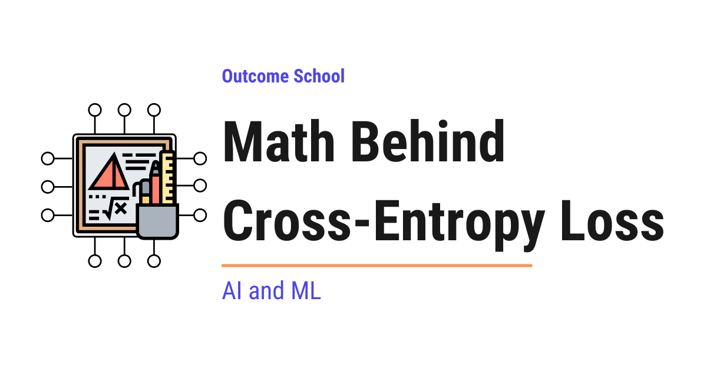

What is Cross-Entropy Loss?
On this page
- The Big Picture
- What is Cross-Entropy?
- The Cross-Entropy Loss Formula
- Why We Take the Negative Log
- Binary Cross-Entropy Loss
- Categorical Cross-Entropy Loss
- Step-by-Step Numeric Example
- Cross-Entropy Loss for Language Models
- The Gradient of Cross-Entropy Loss
- Quick Summary
- Frequently Asked Questions
- Should we pass softmax probabilities or raw logits to the loss function in PyTorch?
- Why not use 1 - p as the loss instead of the negative log?
- When should we use Binary Cross-Entropy instead of Categorical Cross-Entropy?
- Can the cross-entropy loss be zero?
- How is cross-entropy related to perplexity?

Cross-Entropy Loss is a number that tells us how wrong our predicted probabilities are. It measures how different the model's predicted probabilities are from the true answer. The closer the prediction is to the truth, the smaller the loss.
In this blog, we will learn about the math behind Cross-Entropy Loss with a step-by-step numeric example.
When we train a classification model in machine learning, the model predicts probabilities for each class. For example, given an image, the model outputs something like: "I am 70% sure this is a cat, 20% sure it is a dog, and 10% sure it is a rabbit." To train the model, we need a way to measure how wrong these predictions are compared to the true answer. This is exactly what Cross-Entropy Loss does. It is the most widely used loss function in classification tasks, and it powers the training of almost every modern AI model, including GPT, BERT, and image classifiers.
When we hear Cross-Entropy Loss, it sounds complex. But do not worry. If we break it down into its individual parts, every single piece is simple. Our goal is to decode this so clearly that by the end, we will be able to explain how Cross-Entropy Loss works to anyone.
We will cover the following:
- The Big Picture
- What is Cross-Entropy?
- The Cross-Entropy Loss Formula
- Why We Take the Negative Log
- Binary Cross-Entropy Loss
- Categorical Cross-Entropy Loss
- Step-by-Step Numeric Example
- Cross-Entropy Loss for Language Models
- The Gradient of Cross-Entropy Loss
- Quick Summary
Let's get started.
The Big Picture
Before we go into the details, let's understand the big picture. Cross-Entropy Loss measures how different the predicted probability distribution is from the true probability distribution. If our prediction is close to the truth, the loss is small. If our prediction is far from the truth, the loss is large.
In simple words:
Cross-Entropy Loss = A number that tells us how wrong our predicted probabilities are.
The lower the cross-entropy, the better the model. During training, we keep updating the model weights to make this loss as small as possible. The algorithm that actually performs these weight updates is called gradient descent. We have a detailed blog on Math Behind Gradient Descent that explains how this works step by step.
What is Cross-Entropy?
The word Cross-Entropy comes from information theory. Let's decompose it:
Cross-Entropy = Cross + Entropy
- Entropy measures the uncertainty of a probability distribution. If a coin is perfectly fair (50% heads, 50% tails), the entropy is high because we are very unsure about the outcome. If a coin always lands heads (100% heads, 0% tails), the entropy is zero because there is no uncertainty.
- Cross means we are comparing two distributions: the true distribution (what should happen) and the predicted distribution (what our model thinks will happen).
So, Cross-Entropy measures the uncertainty we have when we use the predicted distribution to describe events that actually follow the true distribution. If the two distributions are identical, the cross-entropy is at its minimum. If they are very different, the cross-entropy is large.
The Weather Forecaster Analogy
The best way to learn this is by taking an example. Suppose we have a weather forecaster who every morning announces the chance of rain, sunshine, and snow as probabilities (e.g. "60% rain, 30% sunshine, 10% snow"). At the end of the day, exactly one of these actually happens.
Now, how do we score this forecaster fairly?
- If she says "90% rain" and it rains, she gets a very small penalty. Great forecast.
- If she says "90% sunshine" and it rains, she gets a huge penalty. She was confidently wrong.
- If she says "34% rain, 33% sunshine, 33% snow" (completely unsure) and it rains, she gets a moderate penalty. Hedging is neither punished heavily nor rewarded.
Cross-Entropy Loss is exactly this scoring system. The model is the forecaster, the softmax output is the probability announcement, and the true label is what actually happened. We will keep coming back to this analogy throughout the blog.
The Cross-Entropy Loss Formula
Before we write the formula, let's see the full pipeline of how cross-entropy loss is computed during training:
[raw scores] [probabilities] [loss]
(logits) --> (after softmax) --> (-log of correct class)
z = [2, 3, 1] p = [0.24, 0.66, 0.09] 0.4076
| | |
+-----> softmax ------+----> -log(p_dog) -----+
The raw scores (logits) come out of the final layer of the model. Softmax turns them into probabilities that sum to 1. Cross-Entropy Loss then looks at the probability of the correct class and takes its negative log.
The general formula for Cross-Entropy Loss is:
CE = - sum over all classes i of [ y_i * log(p_i) ]
Here:
y_iis the true label for classi(usually 1 for the correct class, 0 for all others)p_iis the predicted probability for classilogis the natural logarithm (basee)- The sum runs over all classes
Since y_i is 1 only for the correct class and 0 for all others, the formula simplifies to:
CE = - log(p_correct)
Where p_correct is the predicted probability for the correct class.
In simple words, cross-entropy loss is just the negative log of the probability that our model assigned to the correct answer.
Why We Take the Negative Log
Now, a natural question arises - why do we take the log, and why the negative sign?
Why should a forecaster who says "90% sunshine" on a rainy day be punished far more than one who says "60% sunshine"? Because confident mistakes are more dangerous than hedged mistakes. The log makes this punishment happen automatically.
Let's understand this step by step.
Why log?
Suppose our model predicts the correct class with probability 0.9. This is a great prediction. Now suppose another model predicts the correct class with probability 0.1. This is a terrible prediction. We want our loss to reflect this difference strongly.
If we just used 1 - p, the difference between 0.9 and 0.1 would be only 0.8. That does not feel strong enough. But if we use log(p):
log(0.9) = -0.105log(0.1) = -2.303
The log stretches out the small probabilities and punishes them much more harshly. Let's put this into perspective with real numbers:
-log(0.1) = 2.303-log(0.01) = 4.605-log(0.001) = 6.908
A prediction of 0.01 gets almost double the penalty of a prediction of 0.1, and a prediction of 0.001 gets three times the penalty. Every time the predicted probability shrinks by a factor of 10, the penalty goes up by a fixed amount (about 2.303).
Here is the deeper reason why log is the right tool:
1 - pis linear and capped at 1. Even a confidently wrong prediction ofp = 0.01gets a penalty of only0.99.-log(p)is unbounded as p approaches 0. A confidently wrong prediction ofp = 0.001gets a penalty of6.908, and the penalty keeps growing without limit aspgets smaller.
This is exactly what we want - the model should be strongly discouraged from being confidently wrong.
Why negative?
The log of any number between 0 and 1 is always negative. Since loss should be a positive number (lower is better), we put a negative sign in front to flip it. So:
p = 0.9->-log(0.9) = 0.105(small loss, good prediction)p = 0.1->-log(0.1) = 2.303(large loss, bad prediction)p = 1.0->-log(1.0) = 0(zero loss, perfect prediction)pclose to0->-log(p)close toinfinity(huge loss, the forecaster said "0% chance of rain" and it rained)
This is how cross-entropy gives a clean, well-behaved loss value that is small when we are right and large when we are wrong.
Binary Cross-Entropy Loss
Now, let's look at the simplest case - when we have only two classes (e.g. spam or not spam, cat or dog, rain or no rain). This is the exact setting of our forecaster analogy when she only predicts "rain" or "no rain".
In this case, the true label y is either 0 or 1, and the predicted probability p is a single number between 0 and 1 (usually the output of a sigmoid function).
The formula is:
BCE = - [ y * log(p) + (1 - y) * log(1 - p) ]
Here, only one of the two terms is active at a time:
- If
y = 1: only-log(p)is active. We wantpto be close to 1. - If
y = 0: only-log(1 - p)is active. We wantpto be close to 0.
Let's see with an example. Suppose the true label is y = 1 and the model predicts p = 0.8:
BCE = - [ 1 * log(0.8) + 0 * log(0.2) ]
= - log(0.8)
= 0.223
Now suppose the true label is y = 1 but the model predicts p = 0.2:
BCE = - [ 1 * log(0.2) + 0 * log(0.8) ]
= - log(0.2)
= 1.609
The second prediction is punished with a much larger loss. It works perfectly.
Categorical Cross-Entropy Loss
Now, let's move to the case with multiple classes (e.g. classifying an image as cat, dog, rabbit, or bird).
In this case, the true label is a one-hot vector. A one-hot vector is just a list of zeros with a single 1 at the position of the correct class. If we want to understand one-hot encoding in detail, we can watch this video on one-hot encoding. For example, if the true class is "dog" out of [cat, dog, rabbit, bird], the true label is:
y = [0, 1, 0, 0]
The model outputs a probability distribution over all classes, usually by applying a softmax function on top of the raw scores (also called logits). Let's say the model predicts:
p = [0.2, 0.7, 0.05, 0.05]
The categorical cross-entropy is:
CE = - sum [ y_i * log(p_i) ]
= - [ 0 * log(0.2) + 1 * log(0.7) + 0 * log(0.05) + 0 * log(0.05) ]
= - log(0.7)
= 0.357
Since the true label is one-hot, only the term for the correct class survives. So the formula reduces to - log(p_correct).
Step-by-Step Numeric Example
Let's put this into perspective with real numbers. Suppose we have a classification problem with 3 classes: cat, dog, rabbit. The true label is dog, so the one-hot true vector is:
y = [0, 1, 0]
Our model produces the following raw scores (logits) for an input image:
z = [2.0, 3.0, 1.0]
Step 1: Apply softmax to convert logits into probabilities.
The softmax formula is:
p_i = exp(z_i) / sum of exp(z_j) over all j
Let's compute each exponent:
exp(2.0) = 7.389exp(3.0) = 20.086exp(1.0) = 2.718
The sum is: 7.389 + 20.086 + 2.718 = 30.193
So the probabilities are:
p_cat = 7.389 / 30.193 = 0.2447p_dog = 20.086 / 30.193 = 0.6652p_rabbit = 2.718 / 30.193 = 0.0900
We are rounding intermediate values to 4 decimal places for clarity.
Step 2: Compute the cross-entropy loss.
Since the true class is dog, we only care about p_dog:
CE = - log(p_dog)
= - log(0.6652)
= 0.4076
So the cross-entropy loss for this prediction is approximately 0.4076. The model said "66% chance it's a dog" and it was a dog - a decent but not great forecast.
Step 3: Let's see what happens if the model is more confident.
Suppose the logits become:
z = [1.0, 5.0, 0.5]
exp(1.0) = 2.718exp(5.0) = 148.413exp(0.5) = 1.649
Sum: 2.718 + 148.413 + 1.649 = 152.780
p_cat = 2.718 / 152.780 = 0.0178p_dog = 148.413 / 152.780 = 0.9714p_rabbit = 1.649 / 152.780 = 0.0108
Now the loss is:
CE = - log(0.9714) = 0.0290
The loss dropped from 0.4076 to 0.0290. The more confident and correct the model is, the smaller the loss. This is the beauty of cross-entropy. Our forecaster just got better - she said "97% chance of what actually happened" and barely got penalized.
Step 4: Let's see what happens if the model is confidently wrong.
Suppose the logits are:
z = [5.0, 1.0, 0.5]
exp(5.0) = 148.413exp(1.0) = 2.718exp(0.5) = 1.649
Sum: 148.413 + 2.718 + 1.649 = 152.780
p_cat = 148.413 / 152.780 = 0.9714p_dog = 2.718 / 152.780 = 0.0178p_rabbit = 1.649 / 152.780 = 0.0108
The loss is:
CE = - log(0.0178) = 4.029
Here, the loss jumped from 0.4076 to a huge 4.029. The model was confidently predicting "cat" when the true answer was "dog", so cross-entropy punishes it heavily. This is exactly the behavior we want. Coming back to our forecaster analogy, this is the forecaster who said "97% sunshine" on a day it rained - a big penalty.
Note: In practice, deep learning frameworks like PyTorch and TensorFlow do not compute softmax and cross-entropy as two separate steps. They fuse them into a single numerically stable function (e.g. CrossEntropyLoss in PyTorch, softmax_cross_entropy_with_logits in TensorFlow). The reason is that computing exp(z) for large logits can overflow, and computing log on very small probabilities can underflow. The fused version applies the log-sum-exp trick to avoid both problems. So in real code, we pass the raw logits directly, not the softmax output.
Cross-Entropy Loss for Language Models
Now, let's take a real use-case in modern AI. In large language models like GPT, which are built on the Transformer architecture, the model predicts the next token from a vocabulary of tens of thousands of tokens (often 50,000+).
At each position in the sequence, the model outputs a probability distribution over the entire vocabulary. The true label is the actual next token (represented as a one-hot vector of size 50,000+).
For a single token prediction:
CE = - log(p_actual_next_token)
For a full sequence of N tokens, we compute the loss at every position and take the average:
Total Loss = (1 / N) * sum over all positions of [ - log(p_actual_next_token) ]
For example, if the sentence is "The cat sat on the mat" and the model is predicting each next token, we compute - log(p) for each correct token ("cat", "sat", "on", "the", "mat") and average them.
This average cross-entropy loss is also closely related to another famous metric called Perplexity, which is simply exp(average cross-entropy). A lower cross-entropy means a lower perplexity, which means a better language model. If we want to go deeper into the attention math that produces those next-token probabilities in the first place, we can read our blog on Math Behind Attention - Q, K, V.
The Gradient of Cross-Entropy Loss
Now, let's understand why cross-entropy is the go-to loss function when combined with softmax.
The gradient of cross-entropy loss with respect to the logits z has a remarkably simple form:
dCE / dz_i = p_i - y_i
This means the gradient is just predicted probability - true label. That is it.
Let's see what this means with our earlier example. With p = [0.2447, 0.6652, 0.0900] and y = [0, 1, 0]:
Gradient = [0.2447 - 0, 0.6652 - 1, 0.0900 - 0]
= [0.2447, -0.3348, 0.0900]
Here, we can see that:
- The gradient for cat is positive (
0.2447), so the model will reduce the score for cat. - The gradient for dog is negative (
-0.3348), so the model will increase the score for dog. - The gradient for rabbit is positive (
0.0900), so the model will reduce the score for rabbit.
This is exactly what we want. The gradient naturally pushes the model to assign higher probability to the correct class and lower probability to the wrong classes.
The fact that the gradient is this clean makes cross-entropy extremely efficient to train with. There is no messy chain rule explosion, no vanishing gradients from the loss itself. This is why softmax + cross-entropy is the default pairing for classification in almost every deep learning framework.
This p_i - y_i is the starting point of backpropagation - the gradient that then flows backward through every layer of the network to update all the weights. We have a detailed blog on Math Behind Backpropagation that explains this end-to-end flow step by step.
Quick Summary
Let's recap what we have decoded:
- Cross-Entropy Loss measures how different the predicted probability distribution is from the true distribution. Think of it as the scoring system for our weather forecaster.
- Formula:
CE = - sum [ y_i * log(p_i) ]. For one-hot labels, this simplifies toCE = - log(p_correct). - Why log: It punishes confidently wrong predictions much more than slightly wrong ones.
- Why negative: The log of a probability is always negative, so we flip it to get a positive loss value.
- Binary Cross-Entropy is used for two-class problems and uses the sigmoid output.
- Categorical Cross-Entropy is used for multi-class problems and uses the softmax output.
- In language models, cross-entropy is computed at every token position and averaged over the sequence. It is tightly connected to Perplexity.
- Gradient:
dCE / dz_i = p_i - y_i. This clean form is one of the main reasons cross-entropy is the default loss for classification. - In real code, frameworks fuse softmax and cross-entropy into a single numerically stable op. We pass raw logits in, not probabilities.
This is how cross-entropy loss works. Now, we have understood the math behind Cross-Entropy Loss. It is the simple idea of measuring - log(probability of the correct answer) that drives the training of almost every classification model we use today.
Frequently Asked Questions
Should we pass softmax probabilities or raw logits to the loss function in PyTorch?
We should pass the raw logits. Frameworks like PyTorch and TensorFlow fuse softmax and cross-entropy into a single numerically stable function. Computing exp(z) for large logits can overflow, and computing log on very small probabilities can underflow. The fused version uses the log-sum-exp trick to avoid both problems.
Why not use 1 - p as the loss instead of the negative log?
Because 1 - p is linear and capped at 1. Even a confidently wrong prediction of p = 0.01 gets a penalty of only 0.99. The negative log is unbounded as p approaches 0, so it strongly discourages the model from being confidently wrong.
When should we use Binary Cross-Entropy instead of Categorical Cross-Entropy?
We use Binary Cross-Entropy for two-class problems, like spam or not spam, where the prediction usually comes from a sigmoid output. We use Categorical Cross-Entropy for multi-class problems, like cat, dog, rabbit, or bird, where the prediction comes from a softmax output and the true label is a one-hot vector.
Can the cross-entropy loss be zero?
Yes. If the model assigns a probability of 1.0 to the correct class, the loss is -log(1.0), which is 0. This is a perfect prediction. As the probability of the correct class moves close to 0, the loss moves close to infinity.
How is cross-entropy related to perplexity?
Perplexity is simply the exponential of the average cross-entropy. In language models, cross-entropy is computed at every token position and averaged over the sequence. A lower cross-entropy means a lower perplexity, which means a better language model.